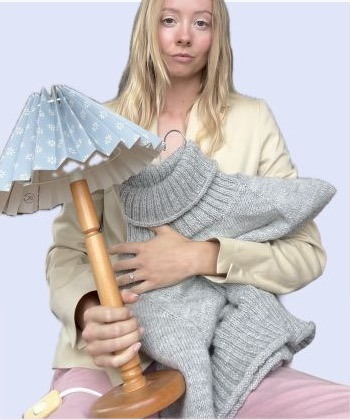

Välkommen hit!
Matilda Usterud är en produkt designer & obotligt pysslare

Länsförsäkringar
Designade ett digitalt verktyg för rådgivare att använda tillsammans med kunden.
Toyota Financial Services
Designade en plattform som samlar hela bilaffären i ett gemensamt verktyg.
Om mig
Produktdesigner med kärlek för detaljer, system och saker som går att ta på.
Jag trivs där komplex information behöver bli begriplig. Min designprocess rör sig mellan analys, tydliga flöden, prototyper och ett pyssligt öga för form.